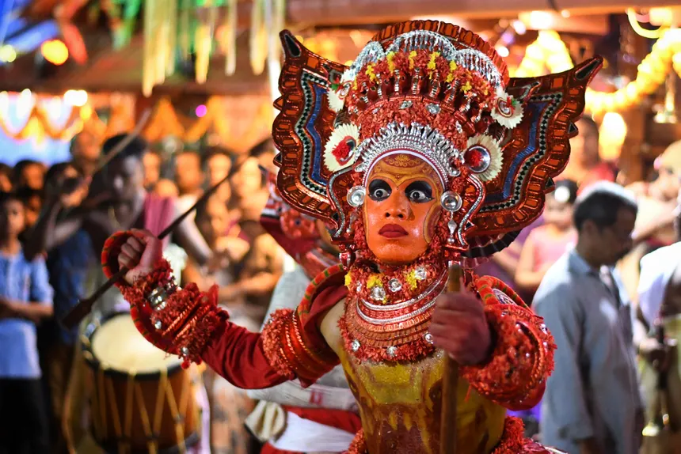

Places to visit
Kerala has various visitor attractions including within the city.
Kerala

Munnar
MunnarOften referred to as the Swiss of South India, Munnar is one of the famous weekend getaways from Kochi, Coimbatore & Madurai. Mattupetty Dam, Echo point, Kundala Lake, Devikulam, Pothamedu Viewpoint, Nyayamkad falls, Thoovanam falls, Eravikulam National Park and Attukal Waterfalls are among the must include places in Munnar packages. Munnar is a trekker's paradise too, which offers both soft and mountain trekking.Munnar is home to some of the world's best tea estates. The tea plants covering Munnar hills make the feeling of seeing a wide green carpet.

Alleppey
AlleppeyAlong with Kumarakom, Alappuzha is among the most famous destination of Backwaters in Kerala. A houseboat cruise in these backwaters is a delightful experience. The never-ending panorama of lush green paddy fields, towering coconut trees, shimmering water, and long canals around Alappuzha make it a delightful destination.Alappuzha is also known for the annual Nehru Trophy Boat Race held on the Punnamada Lake on the second Saturday of August every year.

Thekkady
ThekkadyEstablished in the year 1950, the sanctuary is spread across 777 sq. km, of which 360 sq. km is a thick evergreen forest. The splendid artificial lake formed by the Mullaperiyar Dam across the Periyar River adds to the charm of the park. Among the top tourist places in Kerala, Thekkady is famous for Asian Elephants, Tigers, Gaurs, Sambars, Lion-tailed Macaques, Nilgiri Langurs, Wild Boars, Spotted Deer, Nilgiri Tahr, etc. This is the only sanctuary in India where you can watch wildlife at close quarters from the safety of a boat from the lake. The main attraction of the sanctuary is a group of wild elephants that come to play in the lake.

Kovalam
KovalamKovalam means 'A grove of coconut trees' and the whole area beyond the shores around Kovalam is filled with the endless sight of coconut trees offering magnificent views while approaching the beach. Often called the 'Paradise of the South', Kovalam is one of the wonderful places to visit near Trivandrum.Light House Beach, Vizhinjam Mosque, Samudra Beach, Eve's Beach are the must include places in Kovalam packages.

Wayanad
WayanadWayanad is a picturesque plateau nestled among the mountains of the Western Ghats on the borders of Tamil Nadu and Karnataka. This hill district is home to several lakes, caves, sanctuaries, and waterfalls which are the main attractions of Wayanad Packages. Banasura Sagar Dam, Edakkal Caves, Meenmutty Falls, Soochipara Waterfalls, Wayanad Wildlife Sanctuary are some of the prominent tourist places in Wayanad.

Kumarakom
KumarakomKumarakom is a special tourism zone in Kerala due to the special ecology of the place. Kumarakom Bird Sanctuary, Kumaramangalam Temple, Vaikom, Pathiramanal Island, Aranmula, and Erumeli are the popular tourist places in Kumarakom. The major sightseeing option at Kumarakom is a boat cruise in the backwaters of Vembanad and is an amazing experience for every traveler to Kumarakom.

Kochi
KochiKochi packages are admired for its scenic beauty, traditional architecture, churches, and beaches. Fort Kochi, Bolghatty Palace, Marine Drive, Mangalavanam Bird Sanctuary, St. George Ferona Church - Edappally, Matancherry Palace, Chinese Fishing Nets, and Fort Kochi Beach are some of the prominent Kochi tourist places.Kochi is one of the finest natural harbors in the world. This city is home to Cochin Jewish Synagogue, the oldest synagogue in the Commonwealth, as well as numerous old churches and temples

Athirapally waterfalls
Athirapally waterfallsFormed over Chalakudy River, Athirapally is one of the scenic waterfalls in Kerala that drops down from a height of 80 feet through several parallel streams offering a great scenic beauty. In the monsoon season, the water gets strength and all the streams join together and appear like Niagara Falls.
Trivandrum
TrivandrumThe city derives its name from the deity of Anantha Padmanabha Swamy Temple, among the must include places in Trivandrum packages. Located on the west coast of India, Trivandrum is famous for its enchanting tourist spots including internationally renowned beaches like Kovalam, historic monuments with Gothic architecture, lakes/backwaters, unexplored mountain ranges, etc

Varkala
VarkalaVarkala is the suburban city of Trivandrum. Varkala is a lesser-known yet absolutely paradisiacal destination that houses relatively untouched and clean beaches, historical forts, religious sites, natural springs, backwaters, and more. This quaint town in the southern part of Kerala is known for the unique sedimentary rocks belonging to the Cenozoic age, popularly known as the Warkalli formation adjacent to the Arabian Sea. Varkala Beach or Papanasam Beach, Sri Janardhana Swami Temple, Sivagiri Mutt, Varkala Aquarium, Kappil Beach, Kappil Lake, Chilakoor Beach, Odayam Beach, Varkala Cliff, Edava Beach, Anjengo Fort & Lighthouse, Ponnumthuruthu Island, etc are some of the must-include places in Varkala packages.